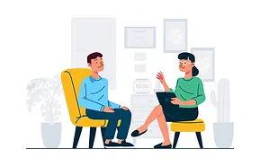

COLLOQUI INDIVIDUALI
Uno spazio dedicato a te nel quale, in un clima empatico e non giudicante potremo insieme cercare di comprendere meglio quello che stai vivendo e scoprire le risorse più adeguate per farvi fronte.

Uno spazio dedicato a te nel quale, in un clima empatico e non giudicante potremo insieme cercare di comprendere meglio quello che stai vivendo e scoprire le risorse più adeguate per farvi fronte.
Può capitare che in un relazione di coppia ci siano dei periodi di crisi. Attraverso un percorso dedicato sarà possibile iniziare a dare nuovi significati ai sentimenti e ai vissuti di ciascuno, così da facilitare il clima relazionale e trovare un diverso stile comunicativo.